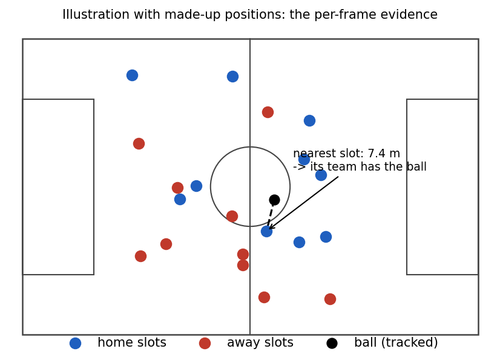
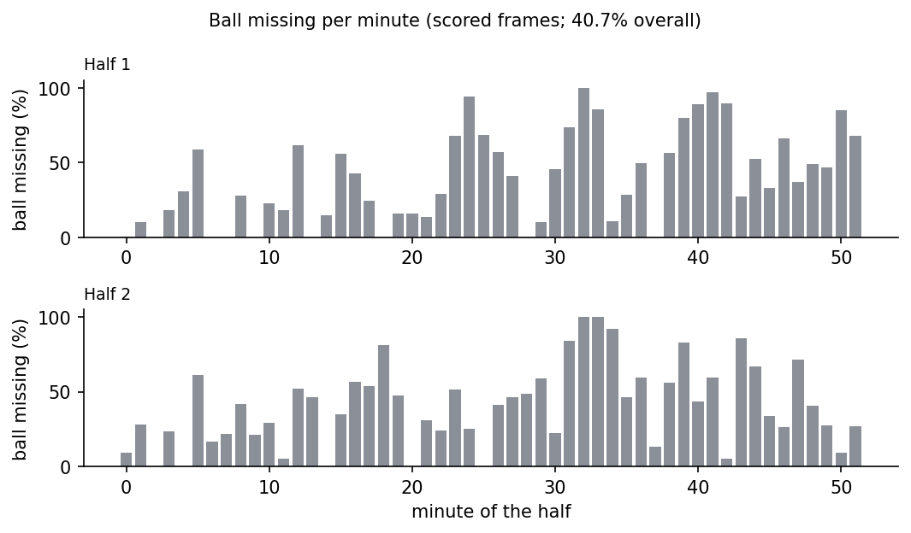
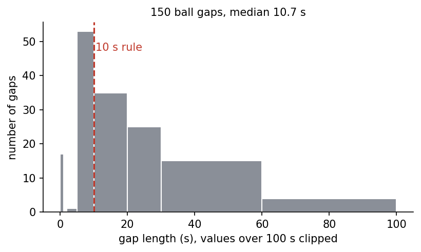
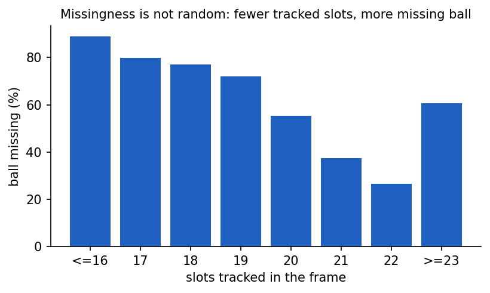
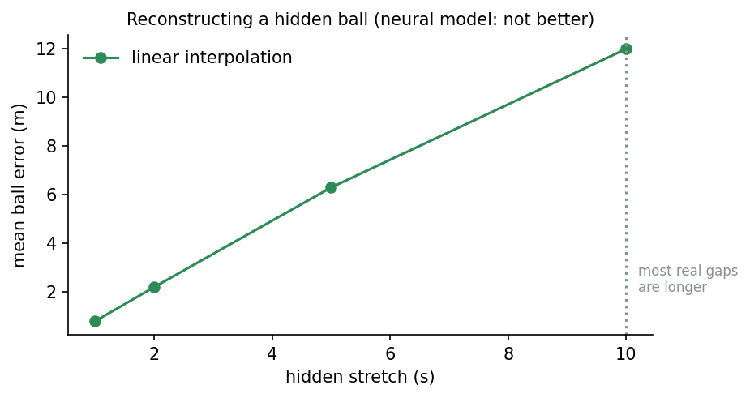
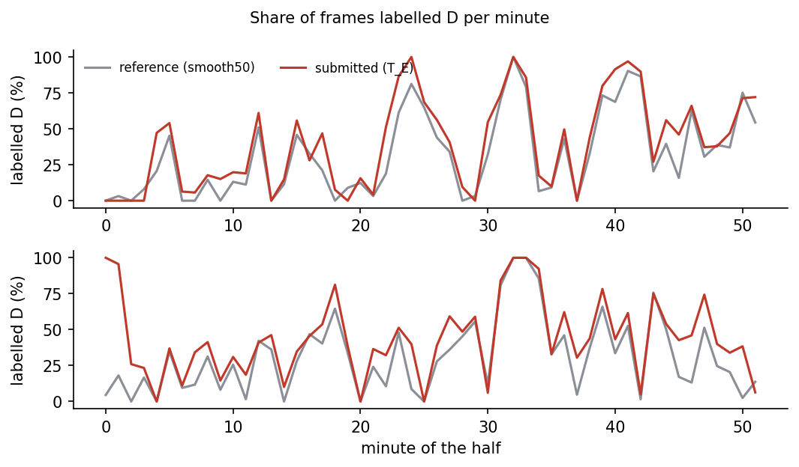
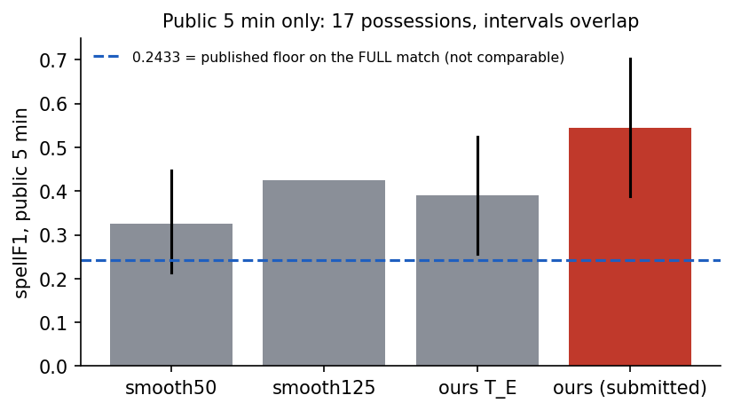
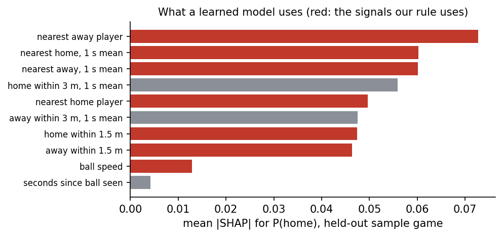

We label every frame of FC Barcelona vs Athletic Club as home possession (H), away possession (A), dead ball (D) or not scored (X), using only the tactical tracking. The pipeline has no learned component: a frame counts as evidence only when exactly one team has a tracked player within 1.5 m of the ball and the ball is not in flight, a centred majority vote over +/-60 frames turns that into possessions, a hold keeps the last possession through short stretches with no controlled evidence, and D is written on long stoppages, on long ball gaps and while the ball is out of play. The ball is missing on 40.7% of scored frames, and a manual look at ten long gaps showed dead ball in all ten, which turned the main design decision. We reproduced the organisers' baseline exactly, tested a neural ball-recovery model and a Viterbi segmentation and dropped both, and we state plainly that the full-match score of our file is unknown; the public 5-minute check (17 possessions) gives spellF1 0.55, with a wide interval. The evidence rule was tested, pre-registered, on two other matches and beat the reference's nearest-player rule on both.
For each of 199,319 video frames (25 Hz) the answer is H, A, D or X. Ranking is by spellF1: possessions are runs of H or A, matched to the true ones by interval overlap (IoU 0.3 to 0.7); a run of D or X separates two possessions. macroF1 (per-frame F1 over H, A, D) breaks ties. The organisers' reference, a 4 s vote over the nearest player, has a published full-match spellF1 of 0.2433 and macroF1 of 0.6724.
The tracking has 46 anonymous slots per frame with normalised coordinates (pitch 105.3 x 68 m), a speed value, and the ball, which is often missing. The team of each slot comes from the metadata. Line i of the file is video frame i. Teams swap ends at half-time. The match data is licensed for the competition only, so this paper contains no real frames and no tracking values; Figure 1 uses made-up positions, and the format below is described with invented numbers.
one frame, schematic (invented values): slot 1: x=0.41 y=0.55 speed=3.2 slot 2: x=0.47 y=0.30 speed=1.1 ... slot 46: (empty) ball: x=0.55 y=0.46 (or empty when not tracked) team: each slot is home or away according to the metadata, not the frame

| step | what | why |
|---|---|---|
| 1 evidence | vote for a team only when exactly one team has a tracked slot within 1.5 m of the ball (metres); contest, loose ball, untracked ball or ball in flight (faster than 7 m/s): no vote | the challenge's rule that a contested or loose ball keeps the last possession; the reference counted the nearest team at any distance |
| 2 smooth | centred majority vote over +/-60 frames; ties keep the previous decided possession | a touch or deflection shorter than the window should not end a possession; gating removes about half the votes, so the window is wider |
| 3 hold | where the window holds no vote, keep the previous vote | assume possession does not change unseen (short gaps) |
| 4 stoppages | D where the 3 s rolling mean of the median slot speed is below 1.0 m/s and the ball is not moving, for at least 5 s; and the second-half frames 110808 to 113741, which the FAQ states are all D | players stand still in free kicks, corners and after goals |
| 5 long gaps | D on every run of 250 or more frames (10 s) with the ball untracked | a long untracked ball is dead ball (section 4) |
| 6 out of play | D from the ball tracked more than 0.5 m beyond a touchline or goal line for 0.4 s, until a restart: the ball back on the pitch at 6 m/s or more, at least 2 s later (60 s at most) | the ball over a line is out (law 9); a throw or kick is faster than carrying (section 5) |
| 7 outside | X outside the two halves | never scored |
There is no full-match ground truth and the public 5 minutes may not be used to tune, so no component is fitted. We wrote the design, the parameters and the decision rule in a work log before each run, and report negative results. We did compare two candidates on the public window before choosing; section 5 says so, and the chosen thresholds sit on a broad plateau rather than at a tuned maximum.
On the 158,857 scored frames the ball is missing on 40.7%, in 150 gaps with a median length of about 10 to 12 s; 99.5% to 99.9% of the missing frames lie in gaps longer than 5 s.



We hid stretches of tracked ball (1, 2, 5, 10 s) and rebuilt them with last position, constant velocity, linear interpolation and a Set Transformer + Bi-LSTM adapted from Kim et al. (KDD 2023, arXiv:2306.08206), direct and residual forms, on a time-ordered split with a clean test block and a protocol written in advance. Linear interpolation was best up to 5 s and the neural model never beat it. Because real gaps are mostly much longer than 10 s, reconstruction would change little.

We chose ten gaps of at least 10 s, evenly spaced by start frame (rule fixed before looking), and a team member watched each in the tactical video. All ten were dead ball: a goal kick or the keeper holding the ball, a corner being set up, a drinks break, a penalty stoppage, a free kick, a goal celebration, a yellow card and one more stoppage. In none was the ball in play but hidden. Two consequences: a video ball detector would have nothing to find (idea dropped), and holding possession across a long gap is probably wrong, so runs of 10 s or more are written D. The sample is ten gaps and the inspection is a human look at match video, which we disclose in section 8; short gaps were not inspected and may be live play.
Rows A to T_E share the same smoothing; the only differences are hold and the D rules. The last row also changes the per-frame evidence (controlled ball, +/-60 vote), so its possession numbers are not an ablation of the same method.
| variant | possessions | mean (s) | H | A | D |
|---|---|---|---|---|---|
| A reference (smooth50) | 594 | 7.2 | 38.6% | 29.1% | 32.3% |
| B hold only | 517 | 12.3 | 56.0% | 44.0% | 0% |
| C detector only | 559 | 7.2 | 35.9% | 27.2% | 36.9% |
| D hold + detector | 526 | 9.6 | 44.6% | 34.6% | 20.8% |
| E (D + long gaps as D) | 493 | 8.0 | 35.6% | 26.5% | 37.9% |
| T_E (E + out of play, previous candidate) | 493 | 7.4 | 33.1% | 24.2% | 42.7% |
| controlled ball + in-flight gate (current candidate) | 334 | 10.9 | 34.0% | 23.3% | 42.7% |
Controlled-ball evidence (current candidate). The reference gives every frame with a tracked ball to the nearest team, however far away that player is, so a ball 8 m from the nearest player is counted as that team's possession. The challenge's own rule says a contested or loose ball keeps the last possession, so the current candidate votes only when exactly one team has a player within 1.5 m of the ball, votes over +/-60 frames, and keeps the previous possession on a tie. Dead-ball rules are unchanged. On the full match this gives 395 possessions instead of 493 and the same 42.7% D. On the public window it predicts 16 possessions against 17 true; spellF1 rises from 0.3905 to 0.5212, team accuracy from 0.862 to 0.886 and fragmentation from 1.29 to 0.86. Tested on other matches. On Metrica's open sample games 1 and 2 (possession from their event data, same dead-ball frames for every method; rule and decision written in advance) spellF1 was 0.521 / 0.488 for nearest player, 0.562 / 0.599 with the 1.5 m gate, and 0.575 / 0.635 when a ball faster than 7 m/s (in flight: a pass or clearance) also casts no vote; that last rule is the submission, with 334 possessions of mean 10.9 s on our match. A nearest-player fallback and a switch-on-reception rule helped one game and hurt the other and were dropped. Keeping the ground truth's live frames and our dead frames scores 1.0000 on the public window, so every D we write on the window is correct; keeping our live labels but the ground truth's dead frames raises spellF1 to 0.5818, so the remaining loss mixes live team attribution with dead-ball recall (0.48, unchanged from T_E).
Out of play, tested on other matches. The rule was fixed before it was run and tested on Metrica's three open sample matches (event data as labels): 29 stretches, frame precision 0.59, just under the 0.6 we had set as the bar. Two of those matches blank the ball when it is out, so they test only false alarms; on the one like ours precision was 0.73 and it found 40% of the tracked dead frames. We adopted it anyway and say so: it is a deviation from our own pre-registration. Two other candidates for the missing ball (a hand-weighted gap scorecard and a logistic regression trained on the sample matches) were built and not submitted; see the repository.

Scores on the public 5 minutes (official scorer, 1000 bootstrap draws). This window checks that the pipeline reads the data correctly and lets us describe errors; it has 17 possessions, and the intervals below overlap, so it cannot rank two files reliably. We still used the comparison to choose between T_E and the controlled-ball candidate and say so.
| file | macroF1 | spellF1 | spellF1 5 to 95% |
|---|---|---|---|
| baseline smooth50 | 0.6207 | 0.3256 | 0.21 to 0.45 |
| baseline smooth125 | 0.5812 | 0.4242 | . |
| ours, E | 0.6613 | 0.3707 | 0.24 to 0.50 |
| ours, T_E (previous candidate) | 0.7567 | 0.3905 | 0.26 to 0.52 |
| ours, controlled ball without the in-flight gate | 0.7715 | 0.5212 | 0.36 to 0.68 |
| ours, current candidate | 0.7766 | 0.5455 | 0.39 to 0.70 |

| idea | outcome |
|---|---|
| Ungated nearest-player evidence | the reference counts a frame for the nearest team at any distance, so contests and loose balls cut possessions (25 vs 17 true on the public window); replaced by controlled-ball evidence |
| Neural ball recovery | not better than linear interpolation at any length; real gaps are too long |
| Viterbi segmentation, 3 s switch penalty | 151 possessions of mean 33 s over the match, 6 vs 17 true in the public window (spellF1 0.19); not tuned afterwards, dropped |
| Own ball detector from video | dropped after the ten-gap look: the ball is not in play in the long gaps |
| Gradient boosting and random forest for the evidence (trained on Metrica sample games, leave one game out) | tie with the rule when given its answer as an input (spellF1 0.583 / 0.632 and 0.572 / 0.641 against 0.575 / 0.635); without it the forest is clearly worse (0.542 / 0.555, and it fragments). Not adopted; SHAP in Fig. 8 |
| JEPA or other foundation models | not used; there is no permitted label set to learn from |
Why rules and not a trained model. We tested learned models on the same independent matches and the same pre-registered rule. They matched our rule when it was one of their inputs and lost without it, and the remaining error is in segmentation (both predict about 240 possessions against 370 true), which a better per-frame classifier does not fix. SHAP (Fig. 8) shows that a forest trained without the rule relies on the nearest distance of each team to the ball and the players within 1.5 m: the quantities our rule uses directly.

pip install -r requirements-submission.txt, data in data/, then python possession/submit.py --out <team_name>.csv. Deterministic, numpy and pandas only. SHA-256 for the development bundle: 8409a8920f34f0456d68aefdf47b9640804625173bc02d0ec866a2ca870870e5. The previous T_E candidate is still reproducible with python possession/make_submission.py (SHA-256 fe38ac194ba507cdf8cc3ed4e2da26e907a2e4b65bf006dc7320f66131e5acb9). Full detail: docs/REPRODUCE.md; every finding and its evidence: docs/worklog.md.Kim, Y. et al., Ball Trajectory Inference from Multi-Agent Sports Contexts Using Set Transformer and Hierarchical Bi-LSTM, KDD 2023, arXiv:2306.08206. Organisers' repository metrica-sports/more-than-a-hack-2027 (data description, scorer, baselines). Metrica Sports sample data metrica-sports/sample-data (three open matches; used for testing, not in the labels).